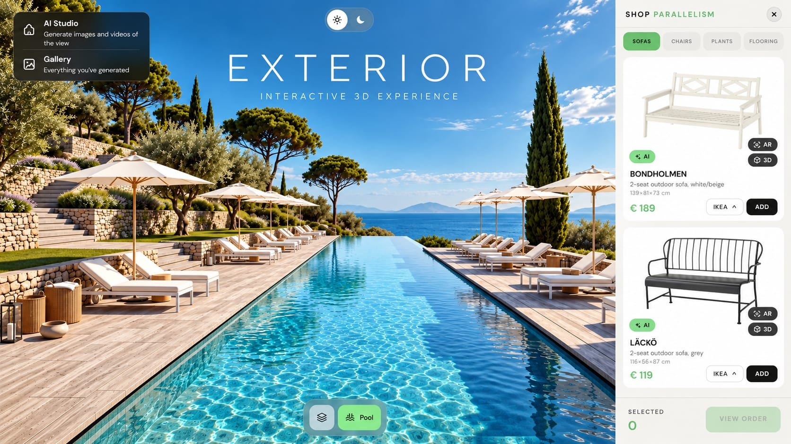
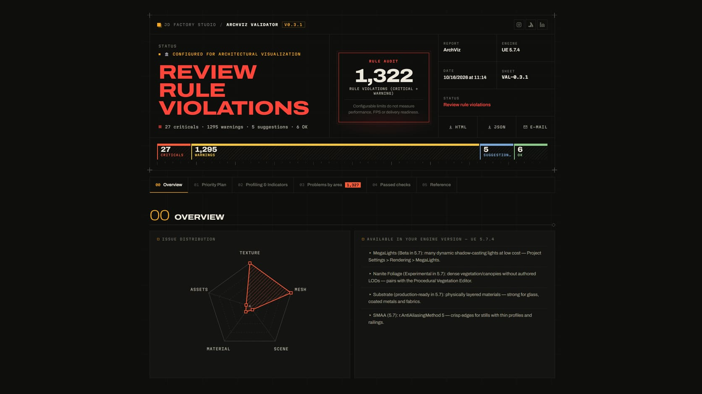

Unreal Engine · Cinematics
Showreel 2026
Ausschließlich Unreal-Engine-Cinematics: Licht, Material und Kamera mit der Sorgfalt des Offline-Renderings — in Echtzeit gerendert.
Unreal Engine · Cinematics
Ausschließlich Unreal-Engine-Cinematics: Licht, Material und Kamera mit der Sorgfalt des Offline-Renderings — in Echtzeit gerendert.
Unreal Engine · Echtzeit-Konfigurator
Echtzeit-Yachtkonfigurator: Rumpf-, Deck- und Segelfarben ändern, zwischen Bug, Cockpit und Heck springen, die Tageszeit einstellen und den Yachtfilm abspielen.
Unreal Engine · Echtzeit-Konfigurator
Gestalten Sie die Szene nach Ihren Vorstellungen: Möbel, Kunst und Leuchten in jeden Innen- oder Außenraum setzen und jede Oberfläche in Echtzeit wechseln.
Unreal Engine · C++ · Echtzeit-Konfigurator
Echtzeit-Auto-Konfigurator: um das Auto kreisen, jede Tür öffnen, einsteigen und Lack und Polster live wechseln.
Unreal Engine · Echtzeit-Konfigurator · In Entwicklung
Als Nächstes: ein Echtzeit-Konfigurator für einen Langstrecken-Businessjet in Unreal Engine, vom Vorfeld bis in die Kabine. Diese Look-Development-Bilder geben das Ziel vor.
3ds Max · Python · KI-Rendering
Mein 3ds-Max-Tool für hochpräzise KI-Renderings: Es scannt jeden Vertex der Szene, übersetzt die Geometrie in exakte Maße für den Prompt und veredelt sie zu einem fotorealistischen, hochauflösenden Bild – ohne den Viewport zu verlassen.

Unreal Engine 5 · Echtzeit-Umgebung
Komplette UE5-Umgebung: Strandhaus-Szene mit hochwertigem Licht, präzisen Materialien und einem Setup, das bereit für Cinematics ist.
Download folgt
Web · 3D e-shop · AR · AI Studio
Web-E-Shop für Archviz: den Außenbereich Szene für Szene erkunden, Sofas, Stühle, Pflanzen und Bodenbeläge mit 3D- und AR-Vorschau auswählen, zwischen Tag und Nacht wechseln und mit dem integrierten AI Studio Bilder und Videos der Ansicht erzeugen.
Live-Experience öffnen ↗
Web · 3D-Showroom in der Ich-Perspektive · KI
3D-Showroom einer tropischen Residenz in der Ich-Perspektive: von der Luftansicht zu Pool, Garten, Wohnzimmer und Küche gehen, Wandpaneele, Böden und Möbel im integrierten Shop auswählen und Bilder mit KI erzeugen – direkt im Browser.
Live-Experience öffnen ↗
Python · Unreal Engine
Python-Tool für Archviz-Pipelines in Unreal Engine: prüft Szenen, findet typische Fehler und sichert produktionsreife Standards vor dem Rendern.
Auf Gumroad erhältlich ↗Brauchen Sie ein Tool oder eine Echtzeit-Szene für Ihre Pipeline?
Kontakt aufnehmen →© 2026 Juscelio Schmidt · Alle Projekte · escrevaparajd@gmail.com